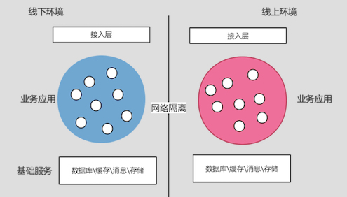
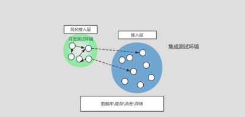
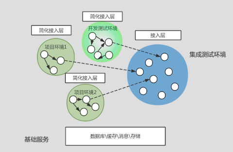
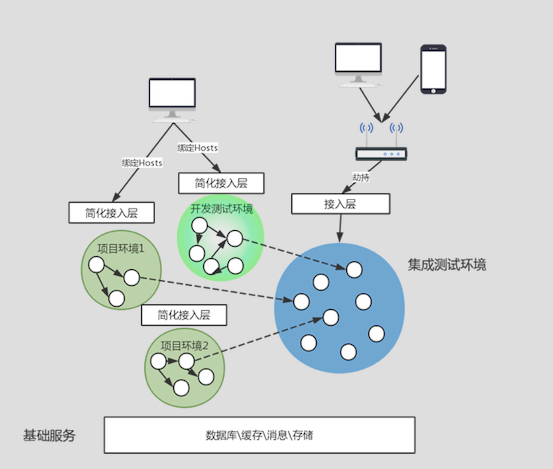

- 00 开篇词 带给你不一样的运维思考.md.html
- 01 为什么Netflix没有运维岗位？.md.html
- 02 微服务架构时代，运维体系建设为什么要以应用为核心？.md.html
- 03 标准化体系建设（上）：如何建立应用标准化体系和模型？.md.html
- 04 标准化体系建设（下）：如何建立基础架构标准化及服务化体系？.md.html
- 05 如何从生命周期的视角看待应用运维体系建设？.md.html
- 06 聊聊CMDB的前世今生.md.html
- 07 有了CMDB，为什么还需要应用配置管理？.md.html
- 08 如何在CMDB中落地应用的概念？.md.html
- 09 如何打造运维组织架构？.md.html
- 10 谷歌SRE运维模式解读.md.html
- 11 从谷歌CRE谈起，运维如何培养服务意识？.md.html
- 12 持续交付知易行难，想做成这事你要理解这几个关键点.md.html
- 13 持续交付的第一关键点：配置管理.md.html
- 14 如何做好持续交付中的多环境配置管理？.md.html
- 15 开发和测试争抢环境？是时候进行多环境建设了.md.html
- 16 线上环境建设，要扛得住真刀真枪的考验.md.html
- 17 人多力量大vs.两个披萨原则，聊聊持续交付中的流水线模式.md.html
- 18 持续交付流水线软件构建难吗？有哪些关键问题？.md.html
- 19 持续交付中流水线构建完成后就大功告成了吗？别忘了质量保障.md.html
- 20 做持续交付概念重要还是场景重要？看笨办法如何找到最佳方案.md.html
- 21 极端业务场景下，我们应该如何做好稳定性保障？.md.html
- 22 稳定性实践：容量规划之业务场景分析.md.html
- 23 稳定性实践：容量规划之压测系统建设.md.html
- 24 稳定性实践：限流降级.md.html
- 25 稳定性实践：开关和预案.md.html
- 26 稳定性实践：全链路跟踪系统，技术运营能力的体现.md.html
- 27 故障管理：谈谈我对故障的理解.md.html
- 28 故障管理：故障定级和定责.md.html
- 29 故障管理：鼓励做事，而不是处罚错误.md.html
- 30 故障管理：故障应急和故障复盘.md.html
- 31 唇亡齿寒，运维与安全.md.html
- 32 为什么蘑菇街会选择上云？是被动选择还是主动出击？.md.html
- 33 为什么混合云是未来云计算的主流形态？.md.html
- 35 以绝对优势立足：从CDN和云存储来聊聊云生态的崛起.md.html
- 36 量体裁衣方得最优解：聊聊页面静态化架构和二级CDN建设.md.html
- 37 云计算时代，我们所说的弹性伸缩，弹的到底是什么？.md.html
- 38 我是如何走上运维岗位的？.md.html
- 39 云计算和AI时代，运维应该如何做好转型？.md.html
- 40 运维需要懂产品和运营吗？.md.html
- 41 冷静下来想想，员工离职这事真能防得住吗？.md.html
- 42 树立个人品牌意识：从背景调查谈谈职业口碑的重要性.md.html
- 划重点：赵成的运维体系管理课精华（一）.md.html
- 划重点：赵成的运维体系管理课精华（三）.md.html
- 划重点：赵成的运维体系管理课精华（二）.md.html
- 新书 《进化：运维技术变革与实践探索》.md.html
- 特别放送 我的2019：收获，静静等待.md.html
- 结束语 学习的过程，多些耐心和脚踏实地.md.html
- 捐赠
15 开发和测试争抢环境？是时候进行多环境建设了
在上一期文章里，我们介绍了多环境下的应用配置管理问题，从这期开始，我们会分两期文章详细聊聊多环境建设的问题：就是我们到底需要哪些环境？这些环境都有什么作用？环境建设的思路和方式是怎样的？
今天我就结合自己的经验和理解与你聊一聊持续交付中的线下多环境建设。
环境分类
通常，我们主要按照环境所起到的作用，将环境分为两大类：
- 线下环境：测试验收用。
- 线上环境：为用户提供服务。
从建设角度来说，线下环境和线上环境，在网段上是要严格隔离的。这一点在做环境建设时就要确定网络规划，同时在网络设备或者虚拟网络的访问策略上要严格限定两个环境的互通，如果限制不严格，就极易引起线上故障，甚至是信息安全问题。
如果你维护过这样两套环境，我想你一定在这方面有过深刻的感受，甚至是痛苦的经历。
所以，从规划上，线上环境和线下环境是两套独立的区域，所有的应用、基础服务都是全套独立部署的。但是线下环境所需的资源往往是要少于线上环境，毕竟只有负责开发测试的少数人使用，不会有线上流量进来。如下图所示：

但是，在实际情况中，这两个环境远远满足不了我们日常开发、测试和运维方面的需求。从保障软件质量和系统稳定的角度出发，我们在实际操作中还需要在这两个大的环境区域中，建立细分的小环境，来满足不同阶段和不同角色的工作需求。
线下环境分类建设
线下环境最初建设的时候，主要是提供给测试使用，帮助其建立一个模拟环境，在软件发布上线前进行需求功能验证，保障业务流程顺畅，以确保应用在上线前达到最低质量要求。
所以，我们在线下环境区域内，建设的第一个环境就是集成测试环境。甚至在一开始，线下环境=集成测试环境，这个环境下的应用和各类基础服务必须跟线上保持一致，但是集群规模不用这么大（如我们上图所示）。
所以，集成测试环境极其重要，这个环境中的应用有严格的发布标准，并且要求环境稳定，不能随意发生变更，否则将会大大影响测试的效率。
不过，随着集成测试环境建设起来，业务需求迭代越来越快，应用和开发人员数量也越来越多，软件发布和变更也会更加频繁，这个时候就会出现开发和测试人员争抢集成测试环境的问题。
比较典型的场景就是，测试人员正在验证一个功能，突然发现应用停止运行了，原来开发为了验证和尽快发布新功能，更新了代码，这样就阻塞了测试的正常工作，但是不更新代码，开发的工作又会停滞下来。
后来这个矛盾越来越严重。这时，我们就需要考虑多建设一套给开发用的环境来解决这个问题。
于是，我们就开始建设线下的第二套环境：开发测试环境。这个环境主要是让开发同学能够尽快发布自己开发完的代码，并在一个具备完整业务应用和基础服务的环境下，验证自己的代码功能。
但是，是否需要跟集成测试环境一样，再建设一套独立完整的线下环境出来呢？答案是否定的。因为这时的应用变化范围相对独立，变化也较小，周边依赖需要同时变化的应用也不会太多，就像上面说的，只要能把它们放到一个完整的环境中进行验证即可。
所以，这个环境只要按照最小化原则建设即可，如果有依赖，可以直接访问到集成测试环境。在这里，我们以简单的模型展示开发测试环境跟集成测试环境的关系：

再往后，开发测试环境上，又会出现开发和测试的冲突和争抢，因为从场景上，业务开发团队可能要同时承担多个并行项目的研发，而且可能会有多个业务开发团队一起参与进来。
比如对于电商来说，到了年底，就集中会有“双11”、“双12”、“双旦节”以及“年货节”等等这样的大型营销项目，因为时间非常紧凑，所以就必须多项目并行。
这个时候，分解下来，对于我们的应用软件来说，有可能是存在多个开发分支的。到了项目联调和验证环节，就必然会存在同一个应用有多个版本需要同时发布和测试的情况，但是开发测试环境却只有一个，这就必然导致双方激烈的争抢。
所以这个时候，就必须建立解决冲突的方案，开始建设线下的第三套环境：项目环境。
项目环境可能有多套，一个项目对应一套环境，但是无论从资源成本还是维护成本方面考虑，项目环境仍然不会像集成测试环境那样形成一套完整的开发测试体系。
所以项目环境同开发测试环境一样，仍然是以最小化为原则来建设，也就是说，在这个环境里面，只部署同一项目中涉及变更的应用，而对于基础服务和不涉及项目需求变更的应用不做重复建设。如果对项目环境中不存在的应用有依赖，那么访问集成测试环境中对应的应用就可以了。
在这里，我们同样以简单的模型展示多个项目测试环境、开发测试环境与集成测试环境的关系：

不过，如果说随项目的增加就需要分别建设对应的项目环境，那么这对于开发、测试和运维来说都会有非常大的维护负担。所以通常情况下，我们会严格限制建设项目环境的起步线。
比如只有公司级大促、公司战略级的项目，或者超过一定人日的跨团队项目，才允许建立独立的项目环境。一般情况下，还是引导优先使用开发测试环境。
环境建设上的关键技术点
线下环境细分出集成测试环境、开发测试环境以及多个项目环境之后，带来的最大的成本其实不在资源上，而是在管理和维护上，而且单单就线下维护的工作量来说，甚至要超过线上维护的工作。
复杂度和涉及到的技术点有以下四个方面。
第一是网段规划。每个环境都要有独立的网段，比如整个线下环境要独立占用一个B段，项目环境和开发测试环境相对较小，可以独立占用一个C段。虽然不需要做网络策略上的隔离，但是为了便于管理，如分配回收资源以及部署应用，还是要在逻辑上区分出来。同时，网段规划也是为下面的单元化调用做准备。
第二是服务化框架的单元化调用。这一点需要服务化框架支持，比如上面我们提到的项目环境，到了联调阶段就需要一组应用单独联调，而不能跨项目环境调用。同时，对于项目中依赖的未变化的应用，就需要调用集成测试环境中稳定版本的应用。这个服务调用的基本规则就是基于上述网段的规划来建立的，规则要放到服务化的注册中心，也就是ConfigServer这个部件中保存，同时需要服务化框架支持规则调用，优先支持本单元调用，本单元不存在可以调用集成测试环境单元。
第三是环境的域名访问策略。这么多的环境 ，内外部DNS域名是保持一套还是多套，比如访问蘑菇街主页（www.mogujie.com），首页域名就一个，但是怎么能确保访问到我们所期望的环境上呢。这里有几种方式：
- 第一种，DNS服务保持一套，域名，特别是外部域名多套，每个环境分别配置一个不同的域名，比如开发测试环境，dev.mogujie.com。但是如果这样，下层的二级域名和二级目录等等都要跟着变动，而且对于项目环境来说，数量不固定，每次都换一个也不方便记忆和管理，所以这个方案基本不可行。
- 第二种，DNS服务保持一套，域名保持一套，但是做域名的hosts绑定，也就是自己来设置要访问域名所对应的环境。这样一来，如果相对固定的开发测试环境和集成测试环境所对应的hosts相对固定，那么只需要绑定一次就可以通用。但是项目环境始终在不断的变化中，绑定规则可能随时在变化，所以这种方案的复杂度在于对hosts配置的管理上。
- 第三种，DNS服务多套，也就是不同的环境中配置独立的DNS服务，这样可以减少繁琐的hosts绑定，但是也会提高多套DNS服务管理上的复杂度，而且对于项目环境有可能依赖集成测试环境中的服务，这时仍然会涉及本地DNS服务的hosts绑定。
- 第四种，对于公网域名，可以直接通过无线路由劫持的方式访问，可以在无线路由器上配置多个接入点，这样一来，连接不同的接入点，就会自动对应到不同环境的域名IP地址上去。
通常，对于公网域名来说，如果具备稳定的环境，如集成测试环境，直接通过第四种劫持方式指定到对应环境中去，这样最方便，这种方案在后续线上多环境建设中还会使用。
对于内部域名，则有多种方案，没有优劣，主要看场景和管理成本。我们选择的是第二 种，即绑定hosts的方式。每个环境会对应一套hosts配置，当选择不同环境进行联调或访问时，就将hosts配置下发到对应部署应用的主机上。
在这里，我们仍然以模型展示第二、四种方案和多种线下环境之间的运行逻辑：

但是，无论采取哪种方式，我们可以看到，这个管理过程仍然是比较复杂繁琐的，必须要非常仔细地规划和部署，同时还需要配套的自动化工具支持，否则靠人管理是不现实的，所以最后一点就是自动化的配套。
第四是自动化管理。按照我们之前分享的管理模式，这里虽然有这么多的线下环境，但我还是会把它们以应用为核心给管理起来，即应用的开发测试环境，应用的集成测试环境，应用的项目环境。这样一来，上面提到的不同环境的网段信息、配置信息、资源分配回收以及软件部署发布，都能够以应用为出发点去做，这一点我们在后面的文章会详细分享。
总结
最后，不知道你有没有感受到，单单一个线下环境就要如此复杂和繁琐，整个持续交付体系建设是多么的有挑战性，就可想而知了。
我们对线下环境稍微做个总结：
- 集成测试环境，主要供测试使用，这个环境会最大程度与线上版本保持同步。作为对应用的功能、需求、业务流程等在正式发布上线进行验证的主要环境，集成测试环境的稳定性和可测试需要加强保障，进行全套建设。同时，作为整个线下环境的中心节点，也要为开发测试环境和项目环境提供部分依赖服务。
- 开发测试环境，主要供开发人员使用，针对偏日常的需求开发、联调和功能验证，以最小化原则进行建设，但是一般情况下不对资源进行回收。
- 项目环境，供开发和测试共同使用，针对多团队多人员协作的项目型场景，可以同时存在多个项目环境，在这个环境中针对项目需求进行独立开发、联调和验证。测试也需要提前介入这个环境进行基本功能的验收，并遵循最小化的建设原则，但是要有生命周期，即项目启动时分配资源，项目结束回收资源，不能无限期占用。
最后，在实际操作中，仍然会很多细节问题，这些问题会跟业务场景有关，针对这些场景又有可能有不同的建设要求，比如消息的消费问题会涉及全业务流程验证等等。
所以，留几个问题给你思考：在线下环境的建设过程中，你通常会遇到哪些问题？会有哪些独立环境？或者你有什么更好的经验和建议分享？
欢迎你留言与我讨论。
如果今天的内容对你有帮助，也欢迎你分享给身边的朋友，我们下期见！
© 2019 - 2023 Liangliang Lee. Powered by gin and hexo-theme-book.